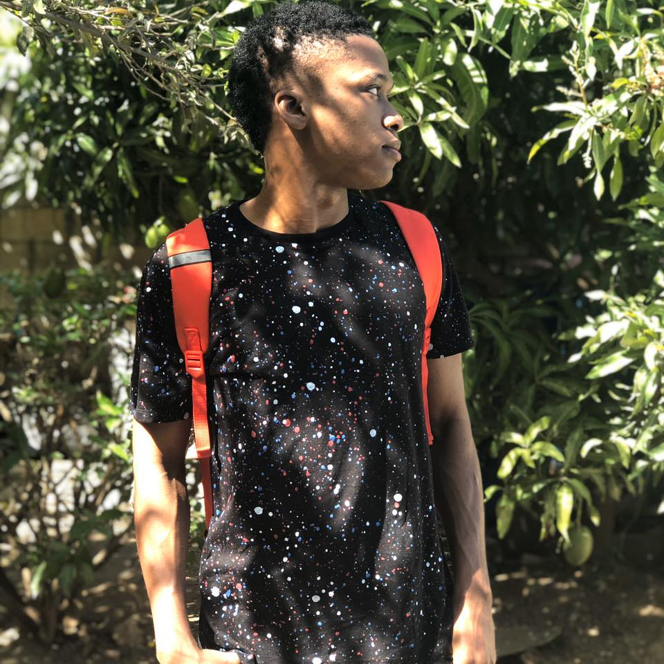

I am a humble,obsequious and intellectual human being. I have had a passion for fixing and using electronic devices from a tender age, it has never decline ever since. I live by a few philosophies including: With God nothing is impossible, Where there is life there is hope and Pain is just an imagination. My hobbies include inevitably fixing broken or malfunctioning computers and electronic devices, playing all sports as I am multitalented and adding new data to my archive of a brain.I use to attend insititutions such as St.Francis Primary and Infant School, Jamaica College and The Cedar Grove Academy before embarking on my current path at The University of Mona. I'm currently enrolled to achieve a Bsc in Information Technology.
I am interested in web development because it helps me to unleash my creative intuition. Further more the fact that web development is a constantly evolving it makes way for newer experiences and essentially fresh ideas to be put forward which can cotnribute to the diversity in web tools.The year 2020 has been a disasterous one and I hope every one sees it through. I would add more but lets not give it(2020) any more ideas.